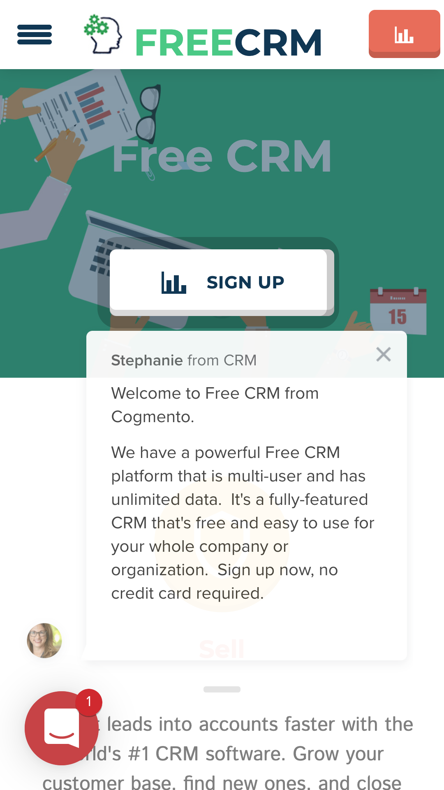
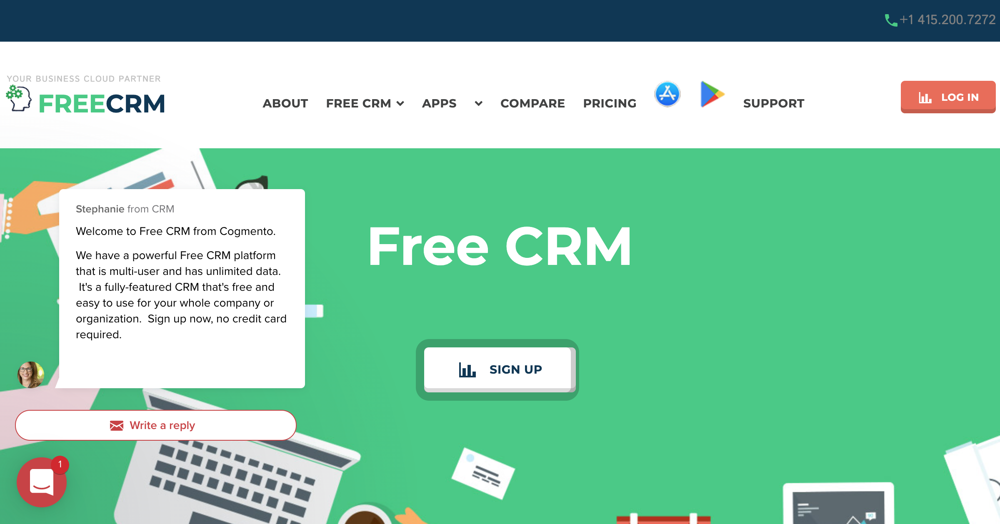

Started
May 12, 2021 04:03:06 PM
Ended
May 12, 2021 04:03:21 PM
Features Passed
3
Features Failed
0
Features
Scenarios
Steps
Timeline
System/Environment
| Name | Value |
|---|---|
| AppName | AutomationPractice |
| user | Suvo |
| build | 1.1 |
| os | Mac |
-
Cucumber to do Test Mobile UI
16:03:06 PM / 00:00:07:393 Pass
Cucumber to do Test Mobile UI
05.12.2021 16:03:06 05.12.2021 16:03:13 00:00:07:393 · #test-id=1PassMobileUI Build Object Repo From a PagestepDefinitions.WebPracticesteps.init(io.cucumber.java.Scenario)MobileUI Build Object Repo From a PagestepDefinitions.JavaPracticesteps.init(io.cucumber.java.Scenario)MobileUI Build Object Repo From a PageGiven open the BrowserSiteName Device http://www.freecrm.com Mobile MobileUI Build Object Repo From a Page Web Browser Title #1 Free CRM customer relationship management software cloudThen store all LinksMobileUI Build Object Repo From a Page All Links From WebSite https://freecrm.com/ ********* FREECRM********* https://freecrm.com/ *********FREECRM********* https://www.freecrm.com/about.html *********ABOUT********* https://www.freecrm.com/# *********FREE CRM********* https://www.freecrm.com/crmcloud.html *********CRM for Any Business********* https://www.freecrm.com/hipaa.html *********HIPAA CRM ********* https://www.freecrm.com/dental.html *********Dental CRM********* https://www.freecrm.com/auto.html *********Automotive CRM********* https://www.freecrm.com/callcenter.html *********Call Center CRM********* https://www.freecrm.com/insurance.html *********Insurance CRM********* https://www.freecrm.com/re.html *********Real Estate CRM********* https://www.freecrm.com/ps.html *********Professional Services CRM********* https://www.freecrm.com/cb.html *********Contractor Builder CRM********* https://www.freecrm.com/is.html *********Independent Sales CRM********* Apps-------------BROKEN LINK https://play.google.com/store/apps/details?id=com.cogmento.app *********Android********* https://apps.apple.com/us/app/cogmento/id1291380634 *********iPhone / iPad********* https://www.freecrm.com/compare.html *********COMPARE********* https://www.freecrm.com/pricing.html *********PRICING********* https://itunes.apple.com/us/app/cogmento/id1291380634?mt=8 ****************** https://play.google.com/store/apps/details?id=com.cogmento.app ****************** https://support.cogmento.com/webinars-and-videos *********SUPPORT********* https://ui.cogmento.com/ ****************** https://register.freecrm.com/register/ ********* SIGN UP********* https://register.freecrm.com/register/ ********* SIGN UP********* https://register.freecrm.com/register/ ********* SIGN UP********* https://register.freecrm.com/register/ ********* SIGN UP********* https://register.freecrm.com/register/ ********* SIGN UP********* https://register.freecrm.com/register/ ********* SIGN UP********* https://freecrm.com/ *********YOUR BUSINESS CLOUD PARTNER FREECRM********* https://play.google.com/store/apps/details?id=com.cogmento.app&pcampaignid=pcampaignidMKT-Other-global-all-co-prtnr-py-PartBadge-Mar2515-1 ****************** https://apps.apple.com/us/developer/cogmento-inc/id1291380633?itsct=apps_box&itscg=30200 ****************** https://www.freecrm.com/crmcloud.html *********Sales CRM********* https://www.freecrm.com/hipaa.html *********HIPAA Medical CRM********* https://www.freecrm.com/dental.html *********Dental CRM********* https://www.freecrm.com/auto.html *********Automotive CRM********* https://www.freecrm.com/callcenter.html *********Call Center CRM********* https://www.freecrm.com/insurance.html *********Insurance CRM********* https://www.freecrm.com/re.html *********Real Estate CRM********* https://www.freecrm.com/ps.html *********Professional Services CRM********* https://www.freecrm.com/cb.html *********Contractor Builder CRM********* https://www.freecrm.com/is.html *********Independent Sales CRM********* https://www.freecrm.com/crmcloud.html *********NPO Nonprofit CRM********* https://www.freecrm.com/crmcloud.html *********NGO Nongovernment CRM********* https://www.freecrm.com/crmcloud.html *********Wealth & Finance CRM********* https://www.freecrm.com/crmcloud.html *********Hospitality CRM********* https://www.freecrm.com/crmcloud.html *********Restaurant CRM********* https://www.freecrm.com/privacy.html *********Privacy Policy********* https://www.freecrm.com/terms.html *********Terms of Use********* offset-top-35 offset-md-top-57 *********Convert leads into accounts faster with the world's #1 CRM software. Grow your customer base, find new ones, and close faster from anywhere. Quickly follow up on leads, identify key contacts, and more. See a comfortable, customizable view of all of the details of sales at the touch of a button. Manage your pipeline and speed up your sales team.********* offset-top-35 offset-md-top-57 *********Support every customer on every channel everywhere. Personalize customer care, close cases faster, and deliver support everywhere. Collect and organize all of your support channels and customer information on a single page to quickly help customers — route questions to the right agent and allocate work based on availability & expertise.********* offset-top-35 offset-md-top-57 *********Reach out and engage your clients and nurture relationships. Personalize your email marketing, engage with mobile and influential social network marketing. Enable non-marketers to inform, engage in marketing quickly, and sell to their consumers at scale. Personalize the message and speak to people in their journey.********* txt-gray-light offset-top-75 offset-md-top-87 *********Grow every part of your business, monitor and manage everything from sales leads to support tickets and channel marketing to email campaigns, all from any desktop or device using our cloud-based software. We have everything you need to organize, track, and nurture your leads and customers. The power of a customer relationship management system is the ability to quickly identify a lead from a prospect or an existing customer. Free CRM software automates the tasks salespeople dislike and makes it easy for everyone. The best way to get started with CRM technology is to sign up and test it out on some of your data right now. Getting started with FreeCRM.com is easy if you have a CSV or Excel file with your leads or contacts; export from your existing system and then import into our CRM fast and easy.********* txt-gray-light offset-top-10 *********A CRM makes your team more efficient, identifying prospects and leads and closing more sales. On average, companies realize a 30% increase in sales by using FreeCRM. FreeCRM can also cut your time to close by as much as 50%. Put your company in this category and implement Free CRM now. Drive revenue growth; CRM powers your business when you streamline your configure, price, and quote process. Easily manage subscriptions, invoices, and payments. But there's more: a CRM can automate many things in your business, like tasks, documents, and support.********* txt-gray-light offset-top-10 *********Find customers faster, win more customers, keep them happy, and connect everything. And it is not just sales; easy-to-use marketing automation and customer service tools boost engagement and happiness. Easy setup, manage leads, opportunities & accounts, create custom dashboards & reports, deliver social and email support, save time with customer service tools. Easily route the right customer service request to the proper agent and manage your knowledge base all in the CRM system.********* txt-gray-light offset-top-10 *********Know every contact in your key accounts. Get a complete view of your customers, including activity history, key contacts, customer communications, and discussions with your co-workers. Customers matter, but spreadsheets, emails, and sticky notes are a hard way to manage them. CRM centralizes your data so you can manage the sales process, help customers faster, and market smarter. With the CRM tool, it is easy to segment and slice and dice your customers or prospects and convert more leads to sales.********* txt-gray-lighter offset-top-75 offset-md-top-87 *********Add as many employees as you wish to the CRM and automate your business like never before. Please take a closer look at what CRM is and how it helps find, win, and keep customers. Manage your sales pipeline and speed up your closing time with Free CRM. Interactions tracked in the CRM give you a bird's eye view, and deals are displayed on the dashboard for total visibility into everyone's progress and obstacles. Enterprise-level security and ongoing support to help you grow. Small businesses can grow faster with all of the tools to fill the sales pipeline through smarter marketing, improved sales productivity, and customer service.********* offset-top-23 *********Our company offers professional Free CRM services to boost sales and automate marketing and get more customers. CRM helps your whole team organize and keep track of all of your important corporate data.********* offset-top-23 *********Try our mobile CRM applications for Android and iPhone and get your data on mobile on the web. Download and install our CRM apps and log in from anywhere to access your CRM data.********* offset-top-22 *********Sales CRM HIPAA Medical CRM Dental CRM Automotive CRM Call Center CRM Insurance CRM Real Estate CRM Professional Services CRM Contractor Builder CRM Independent Sales CRM NPO Nonprofit CRM NGO Nongovernment CRM Wealth & Finance CRM Hospitality CRM Restaurant CRM ********* privacy *********FreeCRM.com © 2021 - Privacy Policy - Terms of Use********* iTunes *********https://www.freecrm.com/images/Itunes.png********* Android *********https://www.freecrm.com/images/Android.png********* free crm customer california *********https://www.freecrm.com/images/index-14-150x150.png********* free crm customer jackson *********https://www.freecrm.com/images/index-12-150x150.png********* free crm customer 42 vantage *********https://www.freecrm.com/images/index-10-150x150.png********* free crm customer original *********https://www.freecrm.com/images/index-11-150x150.png********* free crm customer lakewoods *********https://www.freecrm.com/images/index-12-150x150.png********* free crm customer household *********https://www.freecrm.com/images/index-13-150x150.png********* free crm customer california *********https://www.freecrm.com/images/index-14-150x150.png********* free crm customer jackson *********https://www.freecrm.com/images/index-12-150x150.png********* free crm customer 42 vantage *********https://www.freecrm.com/images/index-10-150x150.png********* free crm customer original *********https://www.freecrm.com/images/index-11-150x150.png********* Get it on Google Play *********https://play.google.com/intl/en_us/badges/static/images/badges/en_badge_web_generic.png********* Download on the App Store *********https://tools.applemediaservices.com/api/badges/download-on-the-app-store/black/en-US?size=250x83&h=95ead71555e15d4e25dc1db901e9e7b4*********Then store all staticTextMobileUI Build Object Repo From a Page All Text From WebSite offset-top-35 offset-md-top-57 *********Convert leads into accounts faster with the world's #1 CRM software. Grow your customer base, find new ones, and close faster from anywhere. Quickly follow up on leads, identify key contacts, and more. See a comfortable, customizable view of all of the details of sales at the touch of a button. Manage your pipeline and speed up your sales team.********* offset-top-35 offset-md-top-57 *********Support every customer on every channel everywhere. Personalize customer care, close cases faster, and deliver support everywhere. Collect and organize all of your support channels and customer information on a single page to quickly help customers — route questions to the right agent and allocate work based on availability & expertise.********* offset-top-35 offset-md-top-57 *********Reach out and engage your clients and nurture relationships. Personalize your email marketing, engage with mobile and influential social network marketing. Enable non-marketers to inform, engage in marketing quickly, and sell to their consumers at scale. Personalize the message and speak to people in their journey.********* txt-gray-light offset-top-75 offset-md-top-87 *********Grow every part of your business, monitor and manage everything from sales leads to support tickets and channel marketing to email campaigns, all from any desktop or device using our cloud-based software. We have everything you need to organize, track, and nurture your leads and customers. The power of a customer relationship management system is the ability to quickly identify a lead from a prospect or an existing customer. Free CRM software automates the tasks salespeople dislike and makes it easy for everyone. The best way to get started with CRM technology is to sign up and test it out on some of your data right now. Getting started with FreeCRM.com is easy if you have a CSV or Excel file with your leads or contacts; export from your existing system and then import into our CRM fast and easy.********* txt-gray-light offset-top-10 *********A CRM makes your team more efficient, identifying prospects and leads and closing more sales. On average, companies realize a 30% increase in sales by using FreeCRM. FreeCRM can also cut your time to close by as much as 50%. Put your company in this category and implement Free CRM now. Drive revenue growth; CRM powers your business when you streamline your configure, price, and quote process. Easily manage subscriptions, invoices, and payments. But there's more: a CRM can automate many things in your business, like tasks, documents, and support.********* txt-gray-light offset-top-10 *********Find customers faster, win more customers, keep them happy, and connect everything. And it is not just sales; easy-to-use marketing automation and customer service tools boost engagement and happiness. Easy setup, manage leads, opportunities & accounts, create custom dashboards & reports, deliver social and email support, save time with customer service tools. Easily route the right customer service request to the proper agent and manage your knowledge base all in the CRM system.********* txt-gray-light offset-top-10 *********Know every contact in your key accounts. Get a complete view of your customers, including activity history, key contacts, customer communications, and discussions with your co-workers. Customers matter, but spreadsheets, emails, and sticky notes are a hard way to manage them. CRM centralizes your data so you can manage the sales process, help customers faster, and market smarter. With the CRM tool, it is easy to segment and slice and dice your customers or prospects and convert more leads to sales.********* txt-gray-lighter offset-top-75 offset-md-top-87 *********Add as many employees as you wish to the CRM and automate your business like never before. Please take a closer look at what CRM is and how it helps find, win, and keep customers. Manage your sales pipeline and speed up your closing time with Free CRM. Interactions tracked in the CRM give you a bird's eye view, and deals are displayed on the dashboard for total visibility into everyone's progress and obstacles. Enterprise-level security and ongoing support to help you grow. Small businesses can grow faster with all of the tools to fill the sales pipeline through smarter marketing, improved sales productivity, and customer service.********* offset-top-23 *********Our company offers professional Free CRM services to boost sales and automate marketing and get more customers. CRM helps your whole team organize and keep track of all of your important corporate data.********* offset-top-23 *********Try our mobile CRM applications for Android and iPhone and get your data on mobile on the web. Download and install our CRM apps and log in from anywhere to access your CRM data.********* offset-top-22 *********Sales CRM HIPAA Medical CRM Dental CRM Automotive CRM Call Center CRM Insurance CRM Real Estate CRM Professional Services CRM Contractor Builder CRM Independent Sales CRM NPO Nonprofit CRM NGO Nongovernment CRM Wealth & Finance CRM Hospitality CRM Restaurant CRM ********* privacy *********FreeCRM.com © 2021 - Privacy Policy - Terms of Use********* iTunes *********https://www.freecrm.com/images/Itunes.png********* Android *********https://www.freecrm.com/images/Android.png********* free crm customer california *********https://www.freecrm.com/images/index-14-150x150.png********* free crm customer jackson *********https://www.freecrm.com/images/index-12-150x150.png********* free crm customer 42 vantage *********https://www.freecrm.com/images/index-10-150x150.png********* free crm customer original *********https://www.freecrm.com/images/index-11-150x150.png********* free crm customer lakewoods *********https://www.freecrm.com/images/index-12-150x150.png********* free crm customer household *********https://www.freecrm.com/images/index-13-150x150.png********* free crm customer california *********https://www.freecrm.com/images/index-14-150x150.png********* free crm customer jackson *********https://www.freecrm.com/images/index-12-150x150.png********* free crm customer 42 vantage *********https://www.freecrm.com/images/index-10-150x150.png********* free crm customer original *********https://www.freecrm.com/images/index-11-150x150.png********* Get it on Google Play *********https://play.google.com/intl/en_us/badges/static/images/badges/en_badge_web_generic.png********* Download on the App Store *********https://tools.applemediaservices.com/api/badges/download-on-the-app-store/black/en-US?size=250x83&h=95ead71555e15d4e25dc1db901e9e7b4*********Then store all imageMobileUI Build Object Repo From a Page All Image From WebSite iTunes *********https://www.freecrm.com/images/Itunes.png********* Android *********https://www.freecrm.com/images/Android.png********* free crm customer california *********https://www.freecrm.com/images/index-14-150x150.png********* free crm customer jackson *********https://www.freecrm.com/images/index-12-150x150.png********* free crm customer 42 vantage *********https://www.freecrm.com/images/index-10-150x150.png********* free crm customer original *********https://www.freecrm.com/images/index-11-150x150.png********* free crm customer lakewoods *********https://www.freecrm.com/images/index-12-150x150.png********* free crm customer household *********https://www.freecrm.com/images/index-13-150x150.png********* free crm customer california *********https://www.freecrm.com/images/index-14-150x150.png********* free crm customer jackson *********https://www.freecrm.com/images/index-12-150x150.png********* free crm customer 42 vantage *********https://www.freecrm.com/images/index-10-150x150.png********* free crm customer original *********https://www.freecrm.com/images/index-11-150x150.png********* Get it on Google Play *********https://play.google.com/intl/en_us/badges/static/images/badges/en_badge_web_generic.png********* Download on the App Store *********https://tools.applemediaservices.com/api/badges/download-on-the-app-store/black/en-US?size=250x83&h=95ead71555e15d4e25dc1db901e9e7b4*********stepDefinitions.JavaPracticesteps.teardown()MobileUI Build Object Repo From a PageMobileUI Build Object Repo From a PageBinaryTree.BinaryTreeNew@5bccaedbstepDefinitions.WebPracticesteps.teardown(io.cucumber.java.Scenario)ScreenShot -
Cucumber to do Java String manipulation
16:03:14 PM / 00:00:00:024 Pass
Cucumber to do Java String manipulation
05.12.2021 16:03:14 05.12.2021 16:03:14 00:00:00:024 · #test-id=11PassJava PracticestepDefinitions.WebPracticesteps.init(io.cucumber.java.Scenario)Java PracticestepDefinitions.JavaPracticesteps.init(io.cucumber.java.Scenario)Java PracticeGiven I created Java String and Java Array List and HashMapJava PracticeThis is a Beautiful Alphanumeric String as 7iCgj6NljZnlJava Practice[FI9EbfzHs0sx, Uk1Hf0Ybtbv5BXp, i4mJq0N10PPGnHRi0, 0bC39ndm, 5zLas8MafA3muf1HSYqCFoa]Java Practice{8865624590=asYcUfEpJJjpenShQPba, 7079857643=dzHjEvNRZWHEqxwLORjf, 9757085541=YdmuNpKGdhaKgjOOVRvL}When Make them reverseJava Practice String This is a Beautiful Alphanumeric String as 7iCgj6NljZnlJava Practice ArrayList [FI9EbfzHs0sx, Uk1Hf0Ybtbv5BXp, i4mJq0N10PPGnHRi0, 0bC39ndm, 5zLas8MafA3muf1HSYqCFoa]Java Practice hashmap {8865624590=asYcUfEpJJjpenShQPba, 7079857643=dzHjEvNRZWHEqxwLORjf, 9757085541=YdmuNpKGdhaKgjOOVRvL}Java Practice iterate Hashmap using reverse order of keysKey : 9757085541 Value : YdmuNpKGdhaKgjOOVRvLKey : 7079857643 Value : dzHjEvNRZWHEqxwLORjfKey : 8865624590 Value : asYcUfEpJJjpenShQPbaThen Print the all the reverse Java String and Java Array List and HashMapJava Practice Make the String Reverse lnZjlN6jgCi7 sa gnirtS ciremunahplA lufituaeB a si sihTJava Practice Make the ArrayList Reverse [xs0sHzfbE9IF, pXB5vbtbY0fH1kU, 0iRHnGPP01N0qJm4i, mdn93Cb0, aoFCqYSH1fum3AfaM8saLz5]Then Print Count the Number of Occurrences of a generic Character in a generic StringJava Practice Print the Char Occurrence 'z' in a generic String 'This is a Beautiful Alphanumeric String as 7iCgj6NljZnl' 0Then Print Count the Number of Vowel of a generic Character in a generic StringJava Practice Print the Vowel occurrence in a generic String 'This is a Beautiful Alphanumeric String as 7iCgj6NljZnl' 16stepDefinitions.JavaPracticesteps.teardown()Java PracticeJava PracticeBinaryTree.BinaryTreeNew@4f82248f -
WebUI Cucumber to do Build own Object repository Dynamically
16:03:14 PM / 00:00:07:103 Pass
WebUI Cucumber to do Build own Object repository Dynamically
05.12.2021 16:03:14 05.12.2021 16:03:21 00:00:07:103 · #test-id=22PassWebUI Build Object Repo From a PagestepDefinitions.WebPracticesteps.init(io.cucumber.java.Scenario)WebUI Build Object Repo From a PagestepDefinitions.JavaPracticesteps.init(io.cucumber.java.Scenario)WebUI Build Object Repo From a PageGiven open the BrowserSiteName Device http://www.freecrm.com Browser WebUI Build Object Repo From a Page Web Browser Title #1 Free CRM customer relationship management software cloudThen store all LinksWebUI Build Object Repo From a Page All Links From WebSite https://freecrm.com/ *********YOUR BUSINESS CLOUD PARTNER FREECRM********* https://freecrm.com/ *********your business cloud partner FreeCRM********* https://www.freecrm.com/about.html *********ABOUT********* https://www.freecrm.com/# *********FREE CRM********* https://www.freecrm.com/crmcloud.html ****************** https://www.freecrm.com/hipaa.html ****************** https://www.freecrm.com/dental.html ****************** https://www.freecrm.com/auto.html ****************** https://www.freecrm.com/callcenter.html ****************** https://www.freecrm.com/insurance.html ****************** https://www.freecrm.com/re.html ****************** https://www.freecrm.com/ps.html ****************** https://www.freecrm.com/cb.html ****************** https://www.freecrm.com/is.html ****************** Apps-------------BROKEN LINK https://play.google.com/store/apps/details?id=com.cogmento.app ****************** https://apps.apple.com/us/app/cogmento/id1291380634 ****************** https://www.freecrm.com/compare.html *********COMPARE********* https://www.freecrm.com/pricing.html *********PRICING********* https://itunes.apple.com/us/app/cogmento/id1291380634?mt=8 ****************** https://play.google.com/store/apps/details?id=com.cogmento.app ****************** https://support.cogmento.com/webinars-and-videos *********SUPPORT********* https://ui.cogmento.com/ *********LOG IN********* https://register.freecrm.com/register/ ********* SIGN UP********* https://register.freecrm.com/register/ ********* SIGN UP********* https://register.freecrm.com/register/ ********* SIGN UP********* https://register.freecrm.com/register/ ********* SIGN UP********* https://register.freecrm.com/register/ ********* SIGN UP********* https://register.freecrm.com/register/ ********* SIGN UP********* https://freecrm.com/ *********YOUR BUSINESS CLOUD PARTNER FREECRM********* https://play.google.com/store/apps/details?id=com.cogmento.app&pcampaignid=pcampaignidMKT-Other-global-all-co-prtnr-py-PartBadge-Mar2515-1 ****************** https://apps.apple.com/us/developer/cogmento-inc/id1291380633?itsct=apps_box&itscg=30200 ****************** https://www.freecrm.com/crmcloud.html *********Sales CRM********* https://www.freecrm.com/hipaa.html *********HIPAA Medical CRM********* https://www.freecrm.com/dental.html *********Dental CRM********* https://www.freecrm.com/auto.html *********Automotive CRM********* https://www.freecrm.com/callcenter.html *********Call Center CRM********* https://www.freecrm.com/insurance.html *********Insurance CRM********* https://www.freecrm.com/re.html *********Real Estate CRM********* https://www.freecrm.com/ps.html *********Professional Services CRM********* https://www.freecrm.com/cb.html *********Contractor Builder CRM********* https://www.freecrm.com/is.html *********Independent Sales CRM********* https://www.freecrm.com/crmcloud.html *********NPO Nonprofit CRM********* https://www.freecrm.com/crmcloud.html *********NGO Nongovernment CRM********* https://www.freecrm.com/crmcloud.html *********Wealth & Finance CRM********* https://www.freecrm.com/crmcloud.html *********Hospitality CRM********* https://www.freecrm.com/crmcloud.html *********Restaurant CRM********* https://www.freecrm.com/privacy.html *********Privacy Policy********* https://www.freecrm.com/terms.html *********Terms of Use********* https://www.freecrm.com/# ****************** offset-top-35 offset-md-top-57 *********Convert leads into accounts faster with the world's #1 CRM software. Grow your customer base, find new ones, and close faster from anywhere. Quickly follow up on leads, identify key contacts, and more. See a comfortable, customizable view of all of the details of sales at the touch of a button. Manage your pipeline and speed up your sales team.********* offset-top-35 offset-md-top-57 *********Support every customer on every channel everywhere. Personalize customer care, close cases faster, and deliver support everywhere. Collect and organize all of your support channels and customer information on a single page to quickly help customers — route questions to the right agent and allocate work based on availability & expertise.********* offset-top-35 offset-md-top-57 *********Reach out and engage your clients and nurture relationships. Personalize your email marketing, engage with mobile and influential social network marketing. Enable non-marketers to inform, engage in marketing quickly, and sell to their consumers at scale. Personalize the message and speak to people in their journey.********* txt-gray-light offset-top-75 offset-md-top-87 *********Grow every part of your business, monitor and manage everything from sales leads to support tickets and channel marketing to email campaigns, all from any desktop or device using our cloud-based software. We have everything you need to organize, track, and nurture your leads and customers. The power of a customer relationship management system is the ability to quickly identify a lead from a prospect or an existing customer. Free CRM software automates the tasks salespeople dislike and makes it easy for everyone. The best way to get started with CRM technology is to sign up and test it out on some of your data right now. Getting started with FreeCRM.com is easy if you have a CSV or Excel file with your leads or contacts; export from your existing system and then import into our CRM fast and easy.********* txt-gray-light offset-top-10 *********A CRM makes your team more efficient, identifying prospects and leads and closing more sales. On average, companies realize a 30% increase in sales by using FreeCRM. FreeCRM can also cut your time to close by as much as 50%. Put your company in this category and implement Free CRM now. Drive revenue growth; CRM powers your business when you streamline your configure, price, and quote process. Easily manage subscriptions, invoices, and payments. But there's more: a CRM can automate many things in your business, like tasks, documents, and support.********* txt-gray-light offset-top-10 *********Find customers faster, win more customers, keep them happy, and connect everything. And it is not just sales; easy-to-use marketing automation and customer service tools boost engagement and happiness. Easy setup, manage leads, opportunities & accounts, create custom dashboards & reports, deliver social and email support, save time with customer service tools. Easily route the right customer service request to the proper agent and manage your knowledge base all in the CRM system.********* txt-gray-light offset-top-10 *********Know every contact in your key accounts. Get a complete view of your customers, including activity history, key contacts, customer communications, and discussions with your co-workers. Customers matter, but spreadsheets, emails, and sticky notes are a hard way to manage them. CRM centralizes your data so you can manage the sales process, help customers faster, and market smarter. With the CRM tool, it is easy to segment and slice and dice your customers or prospects and convert more leads to sales.********* txt-gray-lighter offset-top-75 offset-md-top-87 *********Add as many employees as you wish to the CRM and automate your business like never before. Please take a closer look at what CRM is and how it helps find, win, and keep customers. Manage your sales pipeline and speed up your closing time with Free CRM. Interactions tracked in the CRM give you a bird's eye view, and deals are displayed on the dashboard for total visibility into everyone's progress and obstacles. Enterprise-level security and ongoing support to help you grow. Small businesses can grow faster with all of the tools to fill the sales pipeline through smarter marketing, improved sales productivity, and customer service.********* offset-top-23 *********Our company offers professional Free CRM services to boost sales and automate marketing and get more customers. CRM helps your whole team organize and keep track of all of your important corporate data.********* offset-top-23 *********Try our mobile CRM applications for Android and iPhone and get your data on mobile on the web. Download and install our CRM apps and log in from anywhere to access your CRM data.********* offset-top-22 *********Sales CRM HIPAA Medical CRM Dental CRM Automotive CRM Call Center CRM Insurance CRM Real Estate CRM Professional Services CRM Contractor Builder CRM Independent Sales CRM NPO Nonprofit CRM NGO Nongovernment CRM Wealth & Finance CRM Hospitality CRM Restaurant CRM ********* privacy *********FreeCRM.com © 2021 - Privacy Policy - Terms of Use********* iTunes *********https://www.freecrm.com/images/Itunes.png********* Android *********https://www.freecrm.com/images/Android.png********* free crm customer original *********https://www.freecrm.com/images/index-11-150x150.png********* free crm customer lakewoods *********https://www.freecrm.com/images/index-12-150x150.png********* free crm customer household *********https://www.freecrm.com/images/index-13-150x150.png********* free crm customer california *********https://www.freecrm.com/images/index-14-150x150.png********* free crm customer jackson *********https://www.freecrm.com/images/index-12-150x150.png********* free crm customer 42 vantage *********https://www.freecrm.com/images/index-10-150x150.png********* free crm customer original *********https://www.freecrm.com/images/index-11-150x150.png********* free crm customer lakewoods *********https://www.freecrm.com/images/index-12-150x150.png********* free crm customer household *********https://www.freecrm.com/images/index-13-150x150.png********* free crm customer california *********https://www.freecrm.com/images/index-14-150x150.png********* free crm customer jackson *********https://www.freecrm.com/images/index-12-150x150.png********* free crm customer 42 vantage *********https://www.freecrm.com/images/index-10-150x150.png********* free crm customer original *********https://www.freecrm.com/images/index-11-150x150.png********* free crm customer lakewoods *********https://www.freecrm.com/images/index-12-150x150.png********* free crm customer household *********https://www.freecrm.com/images/index-13-150x150.png********* free crm customer california *********https://www.freecrm.com/images/index-14-150x150.png********* Get it on Google Play *********https://play.google.com/intl/en_us/badges/static/images/badges/en_badge_web_generic.png********* Download on the App Store *********https://tools.applemediaservices.com/api/badges/download-on-the-app-store/black/en-US?size=250x83&h=95ead71555e15d4e25dc1db901e9e7b4*********Then store all staticTextWebUI Build Object Repo From a Page All Text From WebSite offset-top-35 offset-md-top-57 *********Convert leads into accounts faster with the world's #1 CRM software. Grow your customer base, find new ones, and close faster from anywhere. Quickly follow up on leads, identify key contacts, and more. See a comfortable, customizable view of all of the details of sales at the touch of a button. Manage your pipeline and speed up your sales team.********* offset-top-35 offset-md-top-57 *********Support every customer on every channel everywhere. Personalize customer care, close cases faster, and deliver support everywhere. Collect and organize all of your support channels and customer information on a single page to quickly help customers — route questions to the right agent and allocate work based on availability & expertise.********* offset-top-35 offset-md-top-57 *********Reach out and engage your clients and nurture relationships. Personalize your email marketing, engage with mobile and influential social network marketing. Enable non-marketers to inform, engage in marketing quickly, and sell to their consumers at scale. Personalize the message and speak to people in their journey.********* txt-gray-light offset-top-75 offset-md-top-87 *********Grow every part of your business, monitor and manage everything from sales leads to support tickets and channel marketing to email campaigns, all from any desktop or device using our cloud-based software. We have everything you need to organize, track, and nurture your leads and customers. The power of a customer relationship management system is the ability to quickly identify a lead from a prospect or an existing customer. Free CRM software automates the tasks salespeople dislike and makes it easy for everyone. The best way to get started with CRM technology is to sign up and test it out on some of your data right now. Getting started with FreeCRM.com is easy if you have a CSV or Excel file with your leads or contacts; export from your existing system and then import into our CRM fast and easy.********* txt-gray-light offset-top-10 *********A CRM makes your team more efficient, identifying prospects and leads and closing more sales. On average, companies realize a 30% increase in sales by using FreeCRM. FreeCRM can also cut your time to close by as much as 50%. Put your company in this category and implement Free CRM now. Drive revenue growth; CRM powers your business when you streamline your configure, price, and quote process. Easily manage subscriptions, invoices, and payments. But there's more: a CRM can automate many things in your business, like tasks, documents, and support.********* txt-gray-light offset-top-10 *********Find customers faster, win more customers, keep them happy, and connect everything. And it is not just sales; easy-to-use marketing automation and customer service tools boost engagement and happiness. Easy setup, manage leads, opportunities & accounts, create custom dashboards & reports, deliver social and email support, save time with customer service tools. Easily route the right customer service request to the proper agent and manage your knowledge base all in the CRM system.********* txt-gray-light offset-top-10 *********Know every contact in your key accounts. Get a complete view of your customers, including activity history, key contacts, customer communications, and discussions with your co-workers. Customers matter, but spreadsheets, emails, and sticky notes are a hard way to manage them. CRM centralizes your data so you can manage the sales process, help customers faster, and market smarter. With the CRM tool, it is easy to segment and slice and dice your customers or prospects and convert more leads to sales.********* txt-gray-lighter offset-top-75 offset-md-top-87 *********Add as many employees as you wish to the CRM and automate your business like never before. Please take a closer look at what CRM is and how it helps find, win, and keep customers. Manage your sales pipeline and speed up your closing time with Free CRM. Interactions tracked in the CRM give you a bird's eye view, and deals are displayed on the dashboard for total visibility into everyone's progress and obstacles. Enterprise-level security and ongoing support to help you grow. Small businesses can grow faster with all of the tools to fill the sales pipeline through smarter marketing, improved sales productivity, and customer service.********* offset-top-23 *********Our company offers professional Free CRM services to boost sales and automate marketing and get more customers. CRM helps your whole team organize and keep track of all of your important corporate data.********* offset-top-23 *********Try our mobile CRM applications for Android and iPhone and get your data on mobile on the web. Download and install our CRM apps and log in from anywhere to access your CRM data.********* offset-top-22 *********Sales CRM HIPAA Medical CRM Dental CRM Automotive CRM Call Center CRM Insurance CRM Real Estate CRM Professional Services CRM Contractor Builder CRM Independent Sales CRM NPO Nonprofit CRM NGO Nongovernment CRM Wealth & Finance CRM Hospitality CRM Restaurant CRM ********* privacy *********FreeCRM.com © 2021 - Privacy Policy - Terms of Use********* iTunes *********https://www.freecrm.com/images/Itunes.png********* Android *********https://www.freecrm.com/images/Android.png********* free crm customer original *********https://www.freecrm.com/images/index-11-150x150.png********* free crm customer lakewoods *********https://www.freecrm.com/images/index-12-150x150.png********* free crm customer household *********https://www.freecrm.com/images/index-13-150x150.png********* free crm customer california *********https://www.freecrm.com/images/index-14-150x150.png********* free crm customer jackson *********https://www.freecrm.com/images/index-12-150x150.png********* free crm customer 42 vantage *********https://www.freecrm.com/images/index-10-150x150.png********* free crm customer original *********https://www.freecrm.com/images/index-11-150x150.png********* free crm customer lakewoods *********https://www.freecrm.com/images/index-12-150x150.png********* free crm customer household *********https://www.freecrm.com/images/index-13-150x150.png********* free crm customer california *********https://www.freecrm.com/images/index-14-150x150.png********* free crm customer jackson *********https://www.freecrm.com/images/index-12-150x150.png********* free crm customer 42 vantage *********https://www.freecrm.com/images/index-10-150x150.png********* free crm customer original *********https://www.freecrm.com/images/index-11-150x150.png********* free crm customer lakewoods *********https://www.freecrm.com/images/index-12-150x150.png********* free crm customer household *********https://www.freecrm.com/images/index-13-150x150.png********* free crm customer california *********https://www.freecrm.com/images/index-14-150x150.png********* Get it on Google Play *********https://play.google.com/intl/en_us/badges/static/images/badges/en_badge_web_generic.png********* Download on the App Store *********https://tools.applemediaservices.com/api/badges/download-on-the-app-store/black/en-US?size=250x83&h=95ead71555e15d4e25dc1db901e9e7b4*********Then store all imageWebUI Build Object Repo From a Page All Image From WebSite iTunes *********https://www.freecrm.com/images/Itunes.png********* Android *********https://www.freecrm.com/images/Android.png********* free crm customer original *********https://www.freecrm.com/images/index-11-150x150.png********* free crm customer lakewoods *********https://www.freecrm.com/images/index-12-150x150.png********* free crm customer household *********https://www.freecrm.com/images/index-13-150x150.png********* free crm customer california *********https://www.freecrm.com/images/index-14-150x150.png********* free crm customer jackson *********https://www.freecrm.com/images/index-12-150x150.png********* free crm customer 42 vantage *********https://www.freecrm.com/images/index-10-150x150.png********* free crm customer original *********https://www.freecrm.com/images/index-11-150x150.png********* free crm customer lakewoods *********https://www.freecrm.com/images/index-12-150x150.png********* free crm customer household *********https://www.freecrm.com/images/index-13-150x150.png********* free crm customer california *********https://www.freecrm.com/images/index-14-150x150.png********* free crm customer jackson *********https://www.freecrm.com/images/index-12-150x150.png********* free crm customer 42 vantage *********https://www.freecrm.com/images/index-10-150x150.png********* free crm customer original *********https://www.freecrm.com/images/index-11-150x150.png********* free crm customer lakewoods *********https://www.freecrm.com/images/index-12-150x150.png********* free crm customer household *********https://www.freecrm.com/images/index-13-150x150.png********* free crm customer california *********https://www.freecrm.com/images/index-14-150x150.png********* Get it on Google Play *********https://play.google.com/intl/en_us/badges/static/images/badges/en_badge_web_generic.png********* Download on the App Store *********https://tools.applemediaservices.com/api/badges/download-on-the-app-store/black/en-US?size=250x83&h=95ead71555e15d4e25dc1db901e9e7b4*********stepDefinitions.JavaPracticesteps.teardown()WebUI Build Object Repo From a PageWebUI Build Object Repo From a PageBinaryTree.BinaryTreeNew@2357f000stepDefinitions.WebPracticesteps.teardown(io.cucumber.java.Scenario)ScreenShot